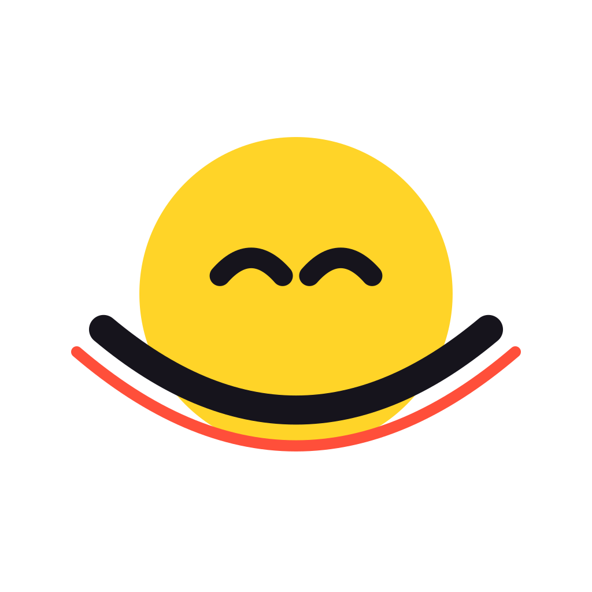

SUR-RIRE
Le rire au-delà du rire.
Tu connais le sourire.
Tu connais le rire.
Maintenant, découvre le SUR-RIRE !
Mot proposé — néologisme en cours de diffusion
Le mot
Définition proposée — verbe
Rire avec une intensité exceptionnelle, au-delà du rire habituel, jusqu’à perdre momentanément le contrôle de son rire.
Conjugaison
Au présent, sur le modèle de rire :
- Je sur-ris.
- Tu sur-ris.
- Il / elle sur-rit.
- Nous sur-rions.
- Vous sur-riez.
- Ils / elles sur-rient.
Participe passé : sur-ri.
Des exemples
- « Cette vidéo m’a fait sur-rire ! »
- « Hier soir, on a tellement sur-ri qu’on en avait mal au ventre. »
- « Attention, cette blague risque de vous faire sur-rire ! »
Le défi
Raconte-nous la fois où tu as le plus SUR-RI !
Une anecdote, une vidéo, un commentaire. Le mot ne vivra que si on le prononce.
Comment participer
-
Emploie le mot
Dans une conversation, un message, une légende. « J’ai tellement sur-ri. » C’est aussi simple que cela.
-
Raconte ton sur-rire
Filme ou écris la fois où tu as le plus sur-ri. Plus c’est vrai, plus le mot prend vie.
-
Ajoute #SurRire
Dans tes vidéos et tes commentaires, le hashtag #SurRire permet de suivre la diffusion du mot — sans rien forcer, sans faux comptes.
Le message
La langue française évolue grâce à ceux qui la parlent. Aujourd’hui, nous proposons un nouveau mot : SUR-RIRE. À nous de le faire vivre !
Pourquoi un nouveau mot ?
Le français sait déjà dire qu’on rit beaucoup : rire aux éclats, se tordre de rire, rire à gorge déployée. Ce sont de belles expressions. Il nous manquait pourtant un verbe court, du quotidien, pour nommer ce moment où le rire dépasse le rire — où l’on en perd, un instant, le contrôle.
SUR-RIRE se construit simplement : le préfixe sur- (au-dessus, au-delà) et le verbe rire. Comme on surpasse, comme on sursaute. Le trait d’union rend la formation visible : un rire, plus loin que le rire.
Un mot n’entre pas dans la langue parce qu’un comité l’a décidé. Il entre s’il est compris, repris, aimé. C’est l’usage qui décide.
Questions fréquentes
Le mot est-il officiel ?
Non, pas encore. SUR-RIRE est un mot proposé, un néologisme en cours de diffusion. Il n’est reconnu ni par l’Académie française ni par un dictionnaire à ce jour. C’est l’usage — vous, nous, celles et ceux qui le prononcent et l’écrivent — qui décidera s’il entre un jour dans la langue et, plus tard, dans les dictionnaires.
Comment s’écrit-il ?
SUR-RIRE, avec un trait d’union. En phrase, on l’accorde comme un verbe : « j’ai sur-ri », « cela m’a fait sur-rire ». On n’écrit pas surrire, ni sur rire.
Comment le conjugue-t-on ?
Sur le modèle de rire : je sur-ris, tu sur-ris, il ou elle sur-rit, nous sur-rions, vous sur-riez, ils ou elles sur-rient. Participe passé : sur-ri.
Pourquoi un trait d’union ?
Pour rendre visible la construction du mot : SUR + RIRE. C’est l’orthographe proposée par le mouvement. Une étude linguistique plus complète pourra, plus tard, examiner d’autres graphies. En attendant, nous écrivons SUR-RIRE.
Comment participer ?
Employez le mot, racontez la fois où vous avez le plus sur-ri, et ajoutez le hashtag #SurRire à vos vidéos ou commentaires. Pas besoin d’inscription. L’adoption doit rester naturelle et authentique.
Peut-on l’utiliser librement ?
Oui. L’ambition de ce mouvement est précisément que le mot vive dans la langue, chez tout le monde. Merci, en revanche, de ne jamais le présenter comme déjà entré dans les dictionnaires ou approuvé par l’Académie française.